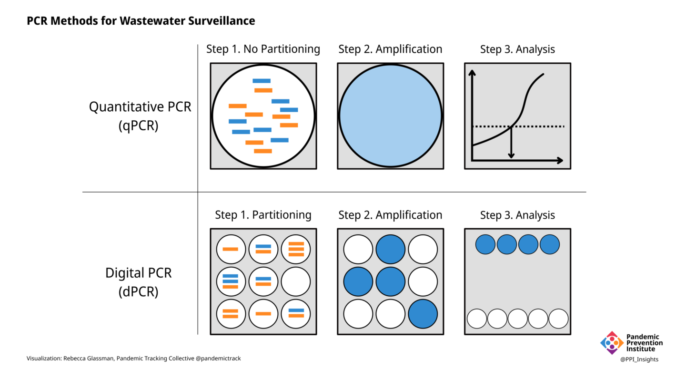

Tackling the Complexities of Covid-19 Wastewater Surveillance
Monitoring SARS-CoV-2 in wastewater is more complicated than detecting it in a clinical sample, such as a nasal swab. This can introduce ambiguities in the data, which can be overcome by standardizing methodology.
This piece is originally published at rockefellerfoundation.org/case-study/tackling-the-complexities-of-covid-19-wastewater-surveillance/
For more than two years, data derived from polymerase chain reaction (PCR) and rapid antigen tests on nasal swabs from individuals has been the primary source of data on Covid-19 in communities. As clinical testing data is becoming less reliably available, wastewater surveillance has emerged as a valuable epidemiological tool. It can detect the presence of SARS-CoV-2 and its variants in a community and monitor trends over time. Because wastewater monitoring does not rely on access to individual diagnostics, it can provide insights that are essential for controlling the current Covid-19 pandemic and preventing future pandemics.
There are many advantages to wastewater as a source of data. However, as with clinical data such as cases and hospitalizations, wastewater data generated from multiple sources can calculate and report data differently. Analysis of wastewater can use some of the same assays as those used in clinical laboratories, but there are additional steps in the process. Methodological choices at each step—the time and place for sampling, the particular PCR assay, the way the results are reported, for example—introduce variation that can affect the accuracy and interpretation of the data.
![1. The first step in wastewater surveillance is choosing sampling sites and frequency. 2: A sample of wastewater can be taken at a single point in time, or over a longer time period. 3. Transport and storage conditions can affect the quality of the sample. 4. Several laboratory procedures prepare the sample for analysis. 5. PCR can measure levels of viral RNA and suggest the presence of variants, which can be confirmed with sequencing. 6. Reporting methods may take into account variables such as population and wastewater flow rate.](ww-process-final-1440@2x-1440x793.png)
1. Sampling: Where and When
Unlike clinical samples, which are collected from individuals, a wastewater sample is a pool of samples from many people. Samples collected at a wastewater treatment facility contain waste from the entire population of the area served by that facility. Samples collected from smaller areas, such as from individual buildings or neighborhoods, can provide more granular data, but as the population sampled becomes smaller, privacy and representation concerns become more important and data becomes more variable and difficult to interpret. Weekly sampling may be adequate to detect the presence or absence of SARS-CoV-2 in wastewater when community transmission levels are low. More frequent sampling of a larger number of sites can more accurately identify trends, but requires a larger investment of time and resources.
2. Sampling: How
A sample of liquid wastewater taken at a single timepoint (grab sampling) can provide a snapshot of viral content in wastewater, but can be inconsistent, as wastewater flow fluctuates over the course of a day. Collection over a longer period of time (e.g., 24 hours) can be accomplished by taking samples periodically (automatic composite sampling) or by immersing a material such as cotton gauze into the wastewater flow (passive sampling).
Analysis can also be performed on the solids that settle out of wastewater. Levels of SARS-CoV-2 tend to be higher in the solid portion than in unseparated liquid wastewater.
3. Transportation and Storage
The information that can be gleaned from wastewater depends on the quality of the sample, which can be affected by conditions to which it is exposed, even before it reaches the laboratory. A fraction of the viral RNA can degrade in the time it takes to travel from an infected individual to the sampling site, and then to the laboratory. Time spent above refrigerator temperature will degrade sample quality, as will repeated freeze-thaw cycles. A degraded sample may yield misleadingly low results. Conversely, cross-contamination of samples, containers, or equipment could cause false positives in sensitive assays such as PCR without the rigorous quality controls in place in most laboratories.
4. Sample Preparation
The composition of wastewater is quite different from the material collected in a nasal swab, and additional processing is needed before the sample can be analyzed. The many different laboratory methods can introduce sources of error that are accounted for with appropriate quality control protocols. Pretreatment may include removal of solids or addition of chemicals to adjust the pH or salinity. Viruses from liquid wastewater samples are typically concentrated by one of many methods. The viral RNA is extracted from the sample,converted to DNA, and analyzed by PCR.
5. Analysis
PCR is the gold standard for detecting the presence of SARS-CoV-2 RNA in clinical samples, as well as in wastewater. In clinical samples, all that is needed for a diagnosis is to know if the virus is present or not. In wastewater, however, the goal is often to determine how much viral RNA is present. Different kinds of PCR can yield different results.
- In quantitative PCR (qPCR), the amount of specific RNA in a sample is inferred by the strength of the signal produced by the fluorescent dyes in the reaction, or by the number of PCR cycles required for the signal to become detectable (the cycle threshold).
- Digital PCR (dPCR) is a more accurate way to measure RNA levels. Instead of determining the amount of RNA in an entire sample, the sample is partitioned into thousands of individual compartments or—in the case of droplet digital PCR (ddPCR)—droplets, each of which acts as its own reaction vessel.

One of the most important choices in developing PCR for wastewater analysis is selecting which sequences within the dozen or so SARS-CoV-2 genes to target. The specificity of a PCR assay is determined by the sequence of the primers, short stretches of DNA that correspond to parts of the target gene. The choice of target sequences and primers can vary between laboratories and, depending on the evolution of the virus, may need to be changed.
- Primers specific for conserved (i.e., less likely to mutate) portions of the SARS-CoV-2 genome can detect and quantify the total level of virus in the wastewater sample. These primers are most often specific for the gene encoding the nucleocapsid (a protein in the virus interior).
- Primers specific to portions of the genome that are characteristic of known variants (usually in the spike, a surface protein) may indicate the presence of specific variants and their relative proportion in a wastewater sample.
While PCR can suggest the presence and proportion of different viral variants, sequencing is required for definitive identification. High-throughput sequencing can give a broader picture of the genetic diversity of SARS-CoV-2 in wastewater. Variants of SARS-CoV-2 possess characteristic patterns of mutations, and many of them are outside of the areas detected by PCR. Since the viral RNA in wastewater consists of a mixture of fragments from many different viruses from many different individuals, sequences obtained from wastewater can identify mutations, but it can be difficult to definitively determine if those mutations are present on the same genome. When mutations characteristic of specific variants are identified in wastewater, however, that information can guide public health officials in obtaining clinical samples from individuals in the area for whole genome sequencing.
Any laboratory assay needs positive and negative controls, but analysis of wastewater samples needs additional controls.
- A matrix recovery control consists of a known amount of a similar, but distinct virus (e.g., mouse or bovine coronaviruses) added to the sample at the beginning to assess how much of the viral RNA is lost during processing.
- Since the concentration of wastewater samples can vary, human fecal normalization can account for such differences by measuring the amount of something that is present in large amounts in human feces, such as pepper mild mottle virus (PMMoV) and comparing it to the amount of SARS-CoV-2.
These controls can help validate results and detect errors or problems with analytical methods.
6. Reporting
Once raw data is obtained, it needs to be reported in meaningful ways. Many local jurisdictions post wastewater data on online dashboards, but only a handful of states do so.
- Because the wastewater in a particular sample may represent a wide range of populations, and because populations in a location can vary over time (due to tourism, for example), some jurisdictions, including Oregon, Utah, and Wisconsin express their results on a per capita basis. Although Missouri’s dashboard displays its results in copies/day, it does provide the population for each location, allowing a more meaningful interpretation of the data.
- Many states report wastewater data based on the volume of the sample including Colorado (copies per liter) and Michigan (copies per 100 milliliters).
- The rate of flow, and volume of wastewater in a sampling site may change over time, with increased rainfall, for example, or in industrial locations. To account for such variation, Ohio and North Carolina use “flow normalized” values to report copies per capita.
- Other ways to express data include as copies per gram (when wastewater solids are analyzed) or as a ratio of viral genes to PPMoV (normalized for human fecal content).
- When a dashboard aggregates data from multiple locations with different ways of reporting data (with different units), SARS-CoV-2 levels may be expressed as “intensity” or “concentration,” but without units.
- On a global basis, one study identified 96 different ways viral levels have been expressed on dashboards. The authors urge consensus on methods of calculating and reporting viral concentrations in wastewater.
Biobot Analytics, which provides wastewater analysis for more than 150 counties in 47 states and territories, proposes a metric called “effective concentration” to account for the variables inherent in wastewater analysis. This metric takes into account:
- Wastewater concentration
- Population represented by the sample
- Sewage flow rate
- RNA degradation
- Reaction inhibition by contaminants in wastewater
- Human fecal strength normalization with PPMoV
No matter how the results of quantitative assays are reported, it is still not possible at this time to determine how many infected individuals are represented by the data. The amount, frequency, and duration of SARS-CoV-2 shedding in feces is quite variable, and may differ depending on the infecting variant. It is therefore impossible to tell if the amount of virus in wastewater is due to a few people shedding a lot of virus or a lot of people shedding a little virus. Wastewater surveillance is a complement to clinical data, not a replacement.
The bigger picture
Ideally, every community with the capacity to monitor wastewater would use the same methods to allow for meaningful comparisons. As it stands currently, lack of standardization in methods and reporting makes it impossible to compare results from different jurisdictions. Within jurisdictions, trends over time are more likely to be accurate, as long as methods remain the same. Trends are, after all, meaningful ways to interpret wastewater data to inform public health decisions. Some form of trend metric is included in most public wastewater reporting.
Because of the potential variability introduced at each step in wastewater processing and analysis, it is important that data about the samples and methodology accompany the reported results.
- Many states receive data from jurisdictions using different methods. California’s wastewater dashboard, for example, lists the laboratory or laboratories providing data for each location, and the units used to report SARS-CoV-2 levels.
- Michigan’s dashboard displays the sample type (grab or composite) and PCR type (qPCR or ddPCR) and laboratory performing analysis for each location.
- Wisconsin and Minnesota note sites where laboratories have changed their analytical methods, and caution that values before and after the change should not be compared.
In February 2022, the US Centers for Disease Control and Prevention (CDC)’s National Wastewater Surveillance System (NWSS) launched a dashboard to display wastewater data provided voluntarily by communities across the US. Inconsistencies in methods and reporting by these 800-1,000 sites can limit the utility of such an aggregated site, but the CDC is continuing to refine their metrics and reporting. In May 2022 NWSS partnered with Biobot Analytics to collect and analyze wastewater samples from 500 US communities.
While the CDC’s NWSS site currently displays only trends in virus levels in wastewater, sequencing of viral RNA is essential for tracking variants in communities able to perform that analysis, Early detection of new variants in a community can track the introduction and geographic spread of variants. Expansion of sequencing capacity would help improve genomic surveillance of both clinical and wastewater samples. As with quantitative analysis, genomic analysis would benefit from standardization. CDC is working with the National Center for Biotechnology Information (NCBI) to establish a wastewater sequencing database.
In early May 2022, the US Food and Drug Administration (FDA) introduced a genomic sequencing project to provide wastewater surveillance for SARS-CoV-2 variants. Based on its well-established GenomeTrakr Network for monitoring foodborne pathogens, the program has so far submitted approximately 1,200 samples, from ten states, to NCBI’s public database. The FDA effort is geographically limited, and while CDC works on a sequencing database, there is currently no national or global platform for wastewater sequences. As a result, researchers and policymakers are left with the task of reaching out and communicating wastewater data.
GenomeTrakr had been monitoring water leaving wastewater treatment plants (effluent) for foodborne pathogens (used for use in agriculture or seafood beds, for example). New methods had to be developed to analyze wastewater coming into treatment plants (influent) for SARS-CoV-2. Numerous detailed protocols are provided for all of the steps in the wastewater sequencing process, including sampling, concentration, RNA extraction, qPCR, genome sequencing, and quality controls. Established with funding from the American Rescue Plan Act of 2021, these efforts will continue as long as funds are available.
Wastewater surveillance for SARS-CoV-2 is not limited to the United States. Several groups are working to enhance collaboration on gathering and aggregating wastewater data. These include:
The way forward
Although standardized methods are ideal, localities must often use the methods that meet their own criteria of accuracy, sensitivity, cost, time, supply chain, and laboratory capacity. Public health priorities may differ in different geographic areas, or at different levels of community transmission, requiring individualized sampling procedures and laboratory methods. When community levels are low, for example, the goal of surveillance might be to detect a resurgence in levels. College campuses may prefer sampling individual buildings to detect outbreaks in dormitories. In areas with high levels of population movement, detection of variants may be the goal. Multiple standardized methods would allow for flexibility depending on the needs of the community.
Wastewater surveillance for SARS-CoV-2 has made extraordinary scientific and technical progress over the course of the pandemic. Methods are currently undergoing a great deal of scrutiny and refinement. It is also likely that methods may need to change due to changes in epidemiological conditions and technical and scientific advances. The numerous innovations in wastewater surveillance during the Covid-19 pandemic can benefit other fields, including environmental surveillance for other pathogens, especially those resistant to antimicrobial drugs. Such innovations may help the FDA’s GenomeTrakr Network, for example, improve monitoring of foodborne pathogens by eliminating the need for growing pathogens in pure culture in the laboratory.
The work done to develop wastewater monitoring methods has revealed a great deal of complexity. Building on this foundation, wastewater surveillance networks encompassing academia, industry, and government can aim for a more unified system or set of systems. As wastewater monitoring methods continue to improve, and methods become more standardized, wastewater data can be a valuable asset to inform public health action. The examples cited here have just skimmed the surface of the complexities and range of practices in wastewater surveillance in the US. Most of the issues raised apply on a global level, with additional issues associated with low-resource settings and non-centralized wastewater management such as septic tanks, latrines, and open sewage drains.
Public health agencies in the US are likely to continue to use wastewater surveillance even after the Covid-19 pandemic subsides. Expansion of wastewater monitoring will require adequate funding, collaboration, transparency, and trust, in addition to accessible technology. Along with increased surveillance capacity, improved data quality can help detect and mitigate future disease outbreaks before they can become pandemics.